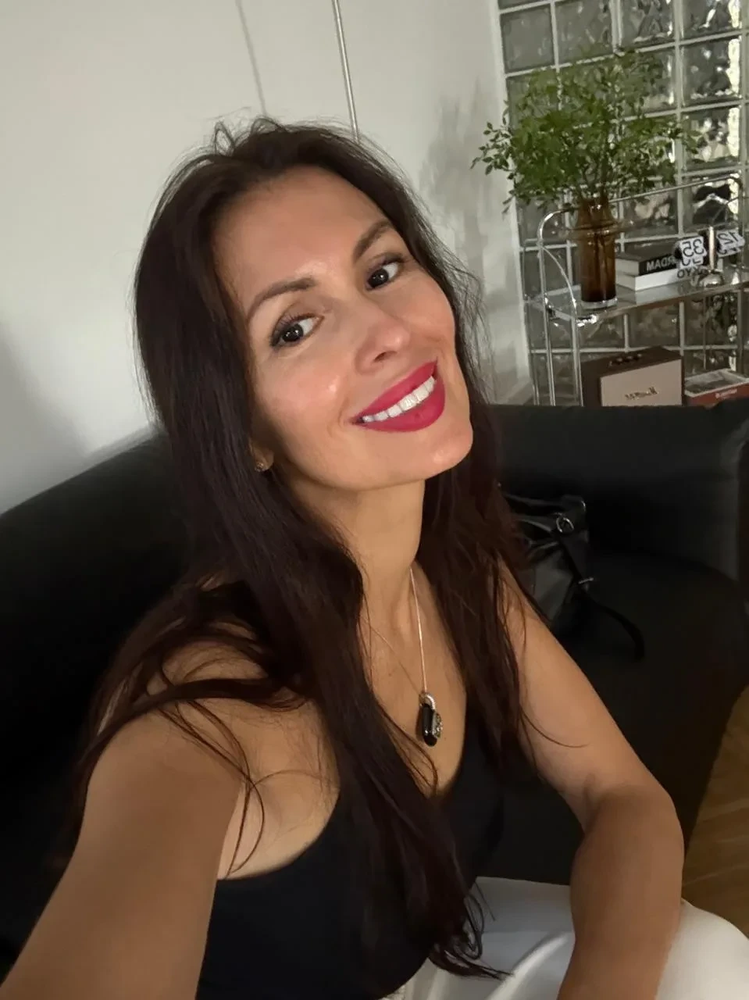
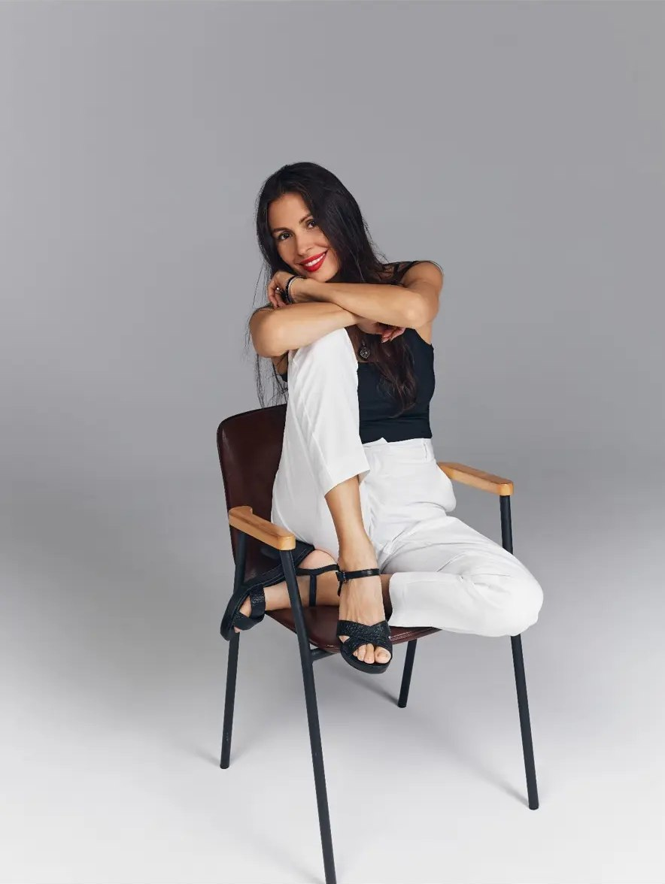
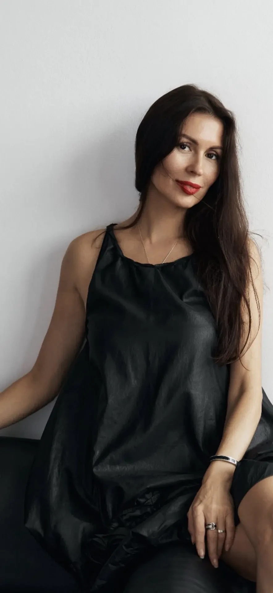

◎
Стоите на месте
Есть ощущение, что вы застряли, и непонятно, что именно держит.
Альбина Адигамова · считываю то, что вас блокирует
За 15 минут расскажу о затыках, программах и установках, которые блокируют рост в финансах, реализации, отношениях и здоровье. Потом короткий созвон, где объясню, что вижу и на что стоит обратить внимание.

Есть ощущение, что вы застряли, и непонятно, что именно держит.
Не хватает сил на действия, а усилия не превращаются в результат.
Хотите узнать, какие установки не дают жить счастливо, и с чем работать дальше.
Благодаря раскрытым интуитивным энергетическим каналам я погружаюсь в «поле» человека и считываю информацию о его затыках, программах и установках, которые блокируют рост.
Напишите мне в Telegram. Договоримся об удобном времени.
Я погружаюсь в ваше поле и считываю, где именно стоят блоки и откуда они берутся.
Рассказываю, что вижу, и на что стоит обратить внимание в первую очередь.
Я работаю мягко и бережно. Моя задача не напугать, а показать, где именно вы теряете энергию, и дать ясную точку, с которой можно начать двигаться к себе.


Прошёл сканирование у Альбины. По всем сферам жизни очень точное попадание 🎯, как будто мне сделали томографию на МРТ аппарате. И, если продолжать аналогию с медициной, то я, как и многие пациенты, вроде как и сам чувствовал, что и где меня не очень устраивает в жизни, и вроде как понимал почему и что делать дальше, чтоб это улучшить, но допускал также, что самостоятельно мог и недостаточно корректно поставить себе диагноз, заблуждаться, и интересно было получить подтверждение своего мнения или иное/дополненное видение с другой точки зрения от кого-то извне. И в этом мне прекрасно помогла Альбина, она будто подключилась к моему профайлу, считала информацию прямо оттуда и бережно, заботливо, с теплотой и с эмпатией донесла её до меня. После общения осталось приятное послевкусие, лёгкость в мыслях и в теле и более упорядоченное видение по всем ключевым сферам моей жизни. Благодарю, Альбина, и желаю успехов в дальнейшем постижении этого искусства! 🙏🤗❤️
Альбина, благодарю тебя за сегодняшнюю работу, за сеанс сканирования. Ты очень точно подсветила те моменты, которые сейчас для меня важны и на которые мне действительно стоит обратить внимание. Мне очень откликается твоя мягкая, женственная, бережная и дающая энергия. Я чувствую к тебе доверие и с удовольствием пойду к тебе в фокус-группу. Благодарю за твоё пространство и за то, как тонко ты чувствуешь и передаёшь информацию. 🙏❤️
Благодарю за такой интересный эксперимент 🙏☺️❤️ Всё, что было просканировано, отразило моё состояние с высокой точностью! В процессе я чувствовала себя комфортно и расслабленно, практика мне понравилась ☺️ Теперь буду внимательно наблюдать за своими ощущениями 👍❤️
Прошла сканирование тела у Альбины, однозначно рекомендую. Удивительно, сколько открытий о себе, о потребностях своей души можно сделать. Это что-то новое для меня: через сканирование узнать про разные участки своего тела и осознать свои чувства. Мне было настолько увлекательно понимать, как циркулирует энергия в теле, в каких участках она блокируется и, главное, в чём причина этих блоков. Становится понятно, с чем надо дальше работать. Очень важно сделать первый шаг и осознать проблему. Однозначно буду продолжать работу в этом направлении. Верю, что трансформации помогут найти контакт с собственным телом и душой, услышать их сигналы и наконец-то познакомиться с собой поближе.
Сегодня прошёл сканирование. Альбина, спасибо, что заряжаешь верой в себя, желанием жить.
С Альбиной мы давно не виделись, и я очень рада была снова встретиться и получить обалденный опыт по сканированию своего тела. Верно были указаны зажимы в плечах, которые нужно прорабатывать, и тот груз, который я несу. Очень большое попадание в перекрытие горловой чакры, с этим тоже предстоит работа. Выявили один очень интересный запрос для психолога, потому что он уходит корнями в детскую тему. Отдельно хочу отметить введение: мягкое, приятное, очень позитивное, настроило на лучший лад. После встречи появилось много энергии и радости внутри. Очень благодарна за этот опыт!
Сегодня прошла сканирование у Альбины. Были чёткие попадания в то, что именно сейчас со мной происходит. Где-то настолько сильно резонировало, что текли слёзы... Есть огромное желание заглянуть в своё подсознание, увидеть скрытые программы и установки, мешающие реализации. И есть ясное понимание, что сканирование — это возможность начать двигаться к самой себе. Большое спасибо Альбине за её труды и старания, за её отзывчивость и искреннее желание помочь!
Бесплатное сканирование за 15 минут и созвон по аудио на 20–30 минут. Напишите мне в Telegram.
Просто напишите слово Сканирование, и я отвечу, когда есть свободное время.